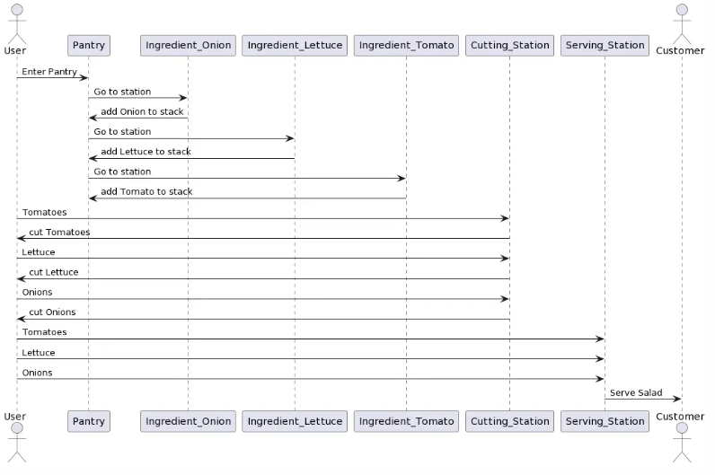
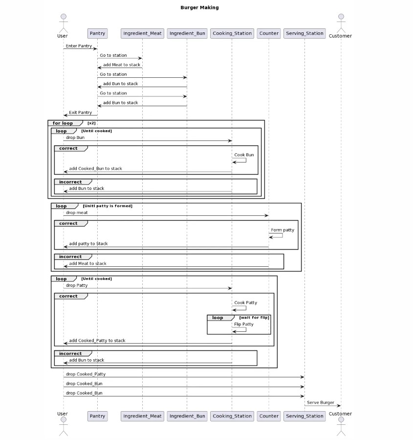

2) UML's
Salad making UML (interim)

Salad making UML (final)

Burger making Controls

Changing chefs state diagram (interim)

Controls for each chef diagram (interim)

controls diagram (Final)

Controls for the stations diagram (interim)